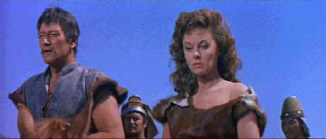

GoodTimes/1956/111/WS 2.35
Wayne dons a wig that foreshadows The Beatles and sports a drooping mustache and trimmed eyebrows meant to suggest his Mongol heritage. You've got to hand it to him though: he is able to recite some of the ripest dialogue without so much a single smile through the two hour production. The next released Wayne film was The Searchers, his defining role. The fresh taste of The Conqueror's dialogue must have driven him to dig deep inside to find the measure of the man Ethan Edwards. I still can't figure out what Susan Hayward was doing in the desert playing the voluptuous Bortai. Susan looked like she arrived in the Gobi directly from an appointment with the studio beautician. Hayward, long one of my favorite actresses, is practically asked to hiss at the bulky Wayne's amorous advances. She is even condemned to doing a veiled dance that should make a highlight reel of "Laughable Hollywood." Well, at least she got to toss a sword at Wayne at the conclusion of the silly dance gyrations.
 |
Passion in the Gobi©Good Times |
Could The Conqueror
qualify as a guilty pleasure? The hairstyles alone are worth a view. The yurts could
probably be turned into a chain of yogurt huts. Director Dick Powell's ponderous direction
includes a triple ration of reaction shots with actors looking like they are lost in the
desert. The Conqueror is the six million dollar film that answers these questions:
Will Bortai seduce Temujin's blood brother Jamuga? Will Wang Khan betray Temujin? Will
Bortai betray her father? Will Hunlun punish her son Temujin for lusting after the
daughter of his father's murderer? Stay tuned. There's even a scene when Wayne strolls tot
he top of a hill at night, raises his arms to the sky like he's taking an air bath, and
chants to his dead father to send him men, MEN, for the coming battle. Yes, there are
battles that include crashing horses and flashing swords. The editing doesn't do much to
make their impact felt on the wide screen. Victor Young's score fills in any holes in the
ripe structure with tiresome romantic themes and bombastic battle charges.
The Conqueror certainly qualifies as one of the first big
Hollywood yurt epics. It's remarkable how many nationalities can people the yurts in a
film about Mongols, Tartars, and Merkits. Along with Wayne and Hayward struggling with
their ethnic identity, Pedro Armendariz does Mongol, Ted de Corsica does Tartar, Thomas
Gomez waddles through Wang Khan, and Agnes Moorehead stares portentously as Hunlun, the
chief Mongol's mother.
Dick Powell should have gotten a special award for helming this
production filmed in the Utah flats. Oscar Millard's script provides more bad dialogue
than Powell encountered as a star of host of movie musicals. He even has one player
daringly declare that the city of Orta was ready to "drop like a ripe plum."
Some guts to use the ripe word in this desert turkey. The photography, credited to a team
of four cinematographers, is unremarkable.
A Howard Hughes presentation, The Conqueror was reputed to
be one of his favorite films. Maybe he had a thing for Susan Hayward. There were even
reports that Hughes considered building a huge yurt complex somewhere in the desert as a
health spa. A little known desert ordinance required yurts larger than fifteen feet high
to be no closer than one mile from each other and Hughes feared smaller yurts would
adversely impact on the purity of the air. Oh well, just another great yurt story.
The DVD is a pleasant surprise. The image is consistently sharp
even though the 2.35 transfer is only using about half the available screen resolution.
There is some edge jitter on straight lines or small details, but it's minor, and there is
little or no edge obvious edge enhancement. The color is vivid, capturing all the fabulous
color depth of Hayward's flimsy costumes. The desert dust whips up into some grain, but it
is natural to the surroundings. The artificially lit nights have a nice color fidelity.
Some of the Victor Young score seems harsh enough to be slightly clipped. The Dolby
Digital 2-channel surround recording uses the fifties style dialogue separation, locating
some dialogue toward the peripheries of the screen, however it is not distracting.